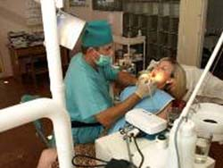
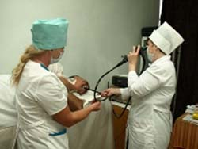
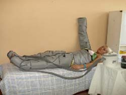

главная
лечение
отдых
мин.воды
проживание
прайс
контакты
история
Лечение в санатории
"Березовские минеральные воды"
Лечение в санатории



Проживая в санатории Берминводы, Вы имеете возможность пройти санаторное лечение следующих заболеваний:
заболеваний органов пищеварения (хронический гастрит с сохраненной и повышенной секрецией
гастродуоденит вне фазы обострения
хронические колиты и энтероколиты легкой и средней степени, вне фазы обострения, кроме стенозирующих
туберкулезных, язвенных, бактериальных и паразитарных форм
болезни печени и желчно-выводящих путей
хронический персестирующий гепатит различной этиологии
остаточные явления после тексиеохимических поражений печени в неактивной форме
холецистит
холангит различной этиологии без явлений желтухи и при нормальном СОЭ
дискензии желчных путей и желчного пузыря
желчнокаменная болезнь без приступов печеночной колики, за исключением форм, осложненных инфекцией
болезни поджелудочной железы: хронический панкреатит легкой и средней степени в фазе полной или неполной ремиссии
болезни мочеполовой системы (хронический цистит, уретротригонит длительного лечения
мочекаменная болезнь - камни почек и мочеточников, в том числе осложненная пиелонефритом и циститом
нарушения обмена веществ (ожирение: первичное, алиментарно-конституциональное, 1-3 степени, без явлений декомпенсации кровообращения
фосфатурический диатез
вторичная симтоматическая фосфатурия
Санаторий оказывает следующие медицинские услуги :
бальнеотерапия
физиотерапия
лечебная физкультура
двигательный режим
лечебное питание
фитотерапия
массаж
made by Stanislav Popov